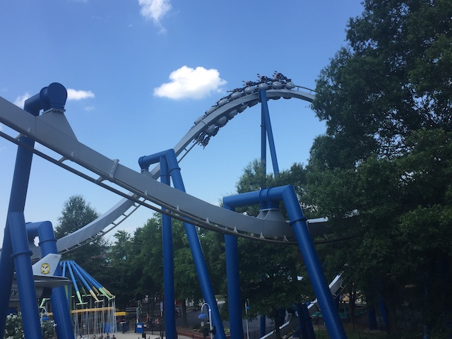
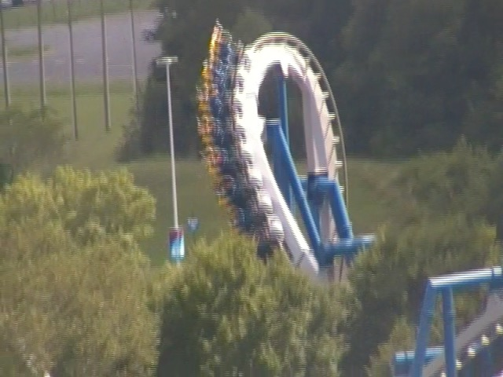
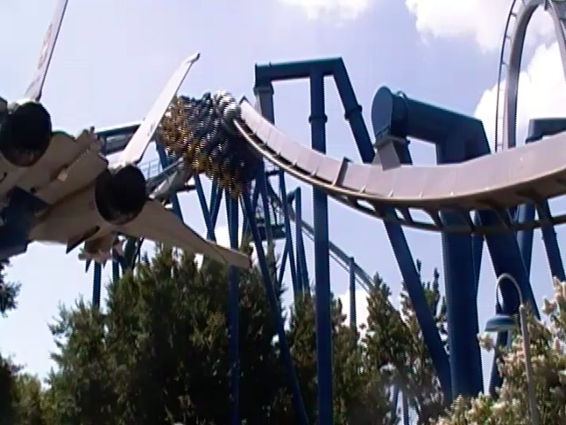
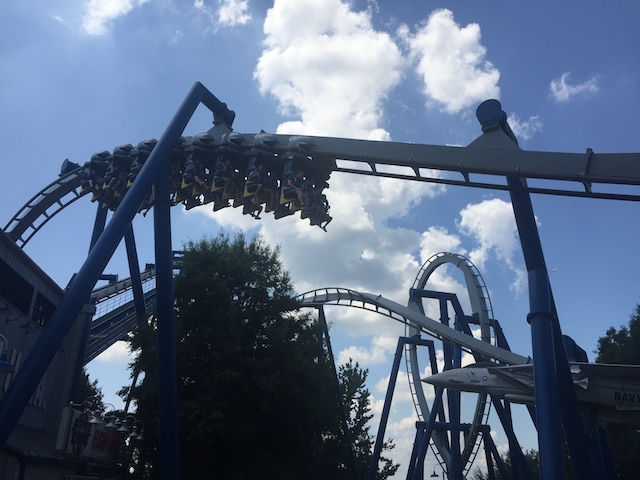
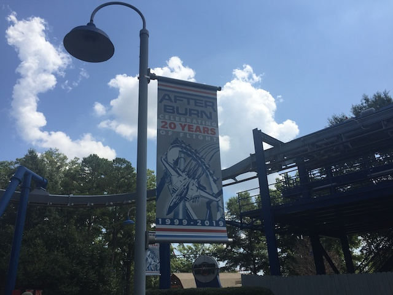
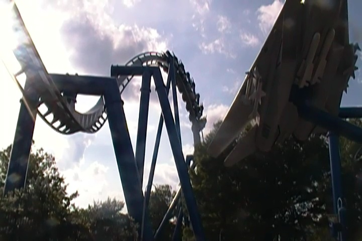
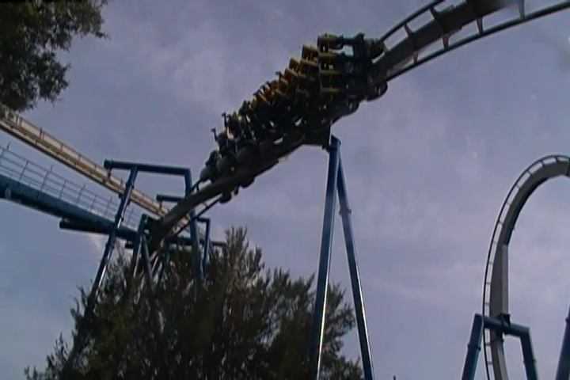
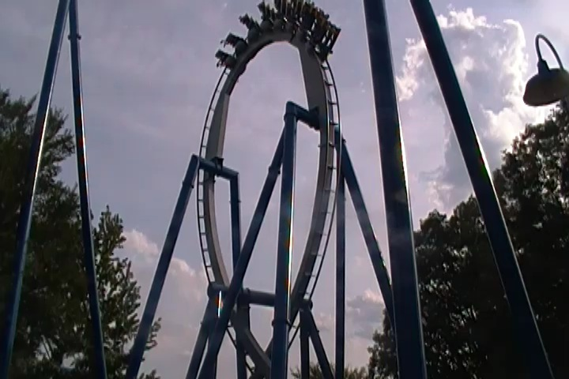
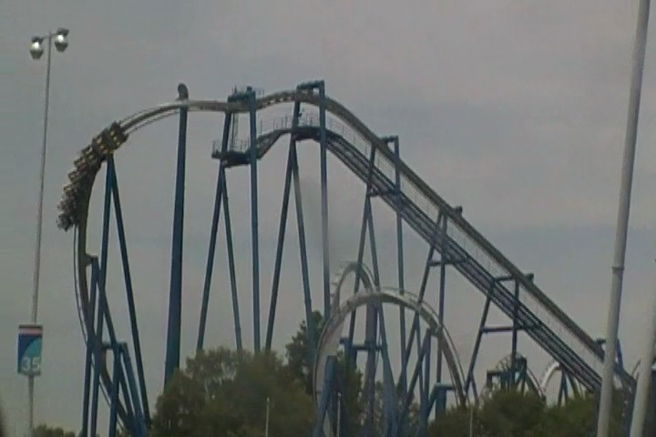
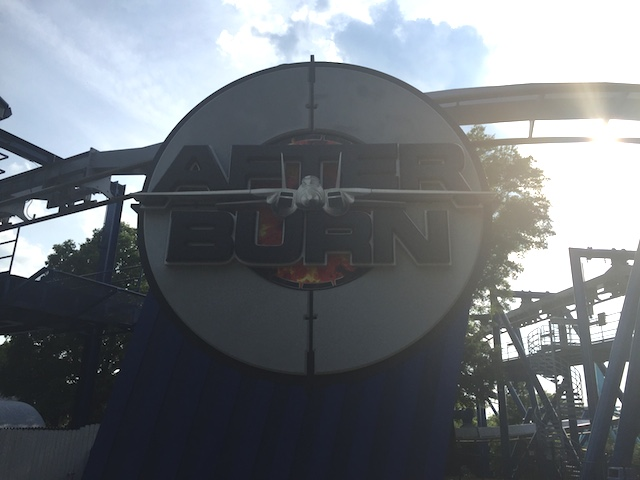

| |
Afterburn Review

We're here at Carowinds to ride Afterburn. The parks B&M Invert, and one of their better ones at that. So that's really good news. =) After pulling down the shoulder harness, the floor drops and away we go. We begin by climbing up the lifthill. There's really not much of a view. All you see is the parking lot. But don't worry. This ride isn't about the view. You're going to be enjoying yourself WAY too much to give a crap about that! So don't worry about that. Eventually, we reach the top, and just like that, all those worries are out the window, as we dip down and dive into the twisted first drop. We quickly reach the bottom, gaining quite a lot of speed. We then head into a vertical loop. And while it's a fairly big loop, we have more than enough speed and just fly right through the loop, giving us a lot of positive Gs. We head back to the ground, head through a quick trench, blast on out, and head straight into the Immelmann loop. Soar on up, flip upsidedown, and twist back down to the ground. And let me tell you. Afterburn does NOT waste any time. It IMMIDIETLY heads right into a heartline spin. It gives some really good whip as yeah. This is definetly one of the more powerful heartline spins by B&M. And you know, I love a good heartline spin. And this one just whips us upsidedown and rightside up in the blink of an eye. But despite that, it's not the best part of the ride. Nope, that's coming up. The Batwing. Yep. You just twist upsidedown, dive down into an underground tunnel. So TAKE THE TUNNEL!!! Flip back upsidedown, and twist back rightside up and dip to the ground. Yeah. I LOVE Batwings. And there is only one other B&M Invert that has a Batwing. And that would be Montu @ Busch Gardens Tampa. Actually, this ride is A LOT like Montu. I mean, so far, all the elements have been the same as on Montu. But this is the part of the ride where the two start to seperate. From here, we just head into an airtime hill over the station. It's not incredibly strong and far from the best. Just a small little airtime hill. But hey. It's not often that you get airtime on a B&M Invert. This leads straight into a corkscrew that just tosses us around like a rag doll. And I mean that in a good way. From there, you just head into an upward helix that takes off some of our speed, and yeah. That's it. So yeah. This ride is on a f*cking roll, and now it's over. Yeah. The best way for me to describe this ride would be to call it the highlights reel of Montu. It starts out just like Montu for the first half, but then just does airtime hill, corkscrew, helix, brake run. So it has all the positives of Montu. Agressive forces, a lot of whip, a freaking batwing! The only downside is that the ride is pretty damn short. Not terribly short or anything, but it's got the length of a Batman clone (or at least it feels that way). It doesn't have the extended second half that Montu has, or the theming. But hey. It's still a damn good ride and one of the best Inverts that B&M has ever made. So definetly give it a ride when at Carowinds.
8/10
Location: Carowinds
Opened: 1999
Built by: B&M
Last Ridden: July 25, 2019
Afterburn Photos









Home
|